The Challenge
"Grocery users have a variety of unique options that are often not available for other online retailers. [...] Checkout optimization needs to be at the forefront to ensure Checkout is as smooth as possible to avoid unnecessary abandonments."
— Baymard Institute
The first version of the editable cart launched in Q2 2022, but editing was limited to quantities only—users couldn't view product details or modify attributes like customizations from the cart. As meal selection options grew more complex, the cart struggled to keep up. Without centralized frontend ownership, new features were displayed poorly or not at all.
| Pair a meal with sides or desserts Q2 2022 | Subscribe to add-ons Q2 2023 | Promotions on surcharge meals Q3 2023 | Drop ship delivery from other brands Q4 2023 |
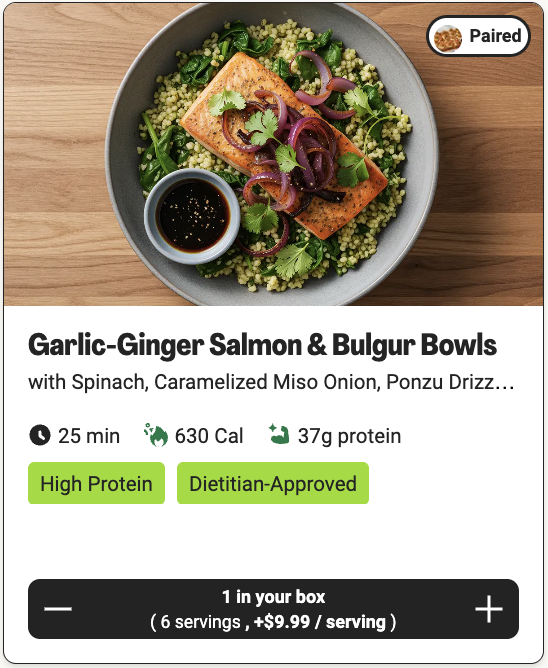 |
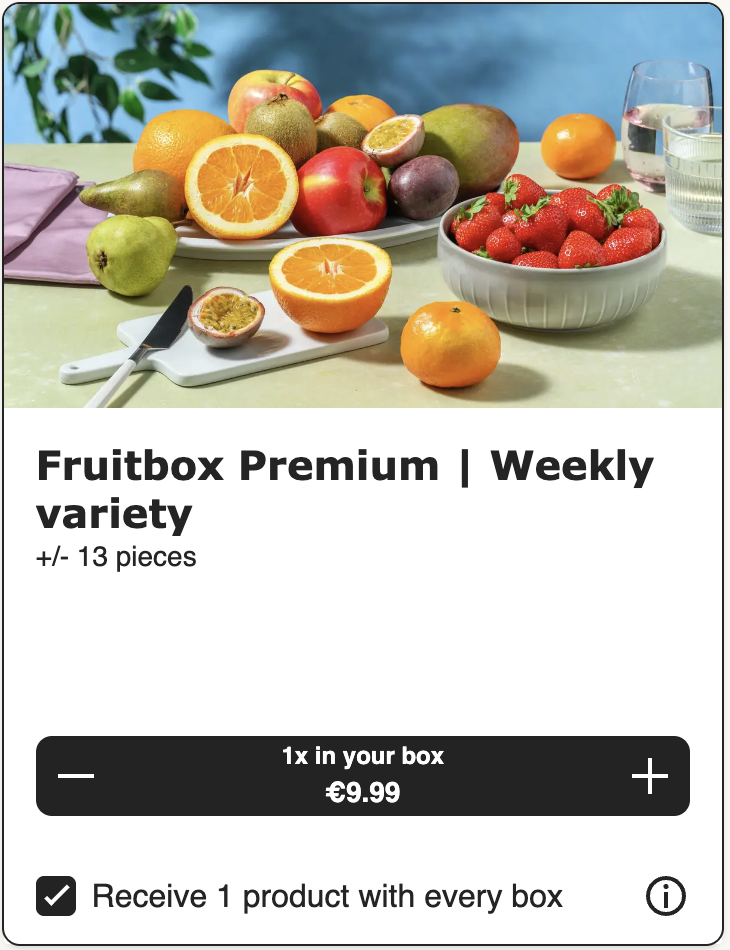 |
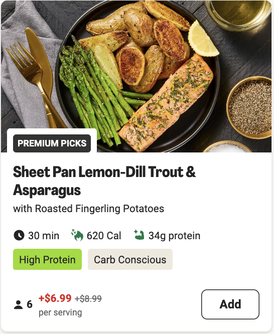 |
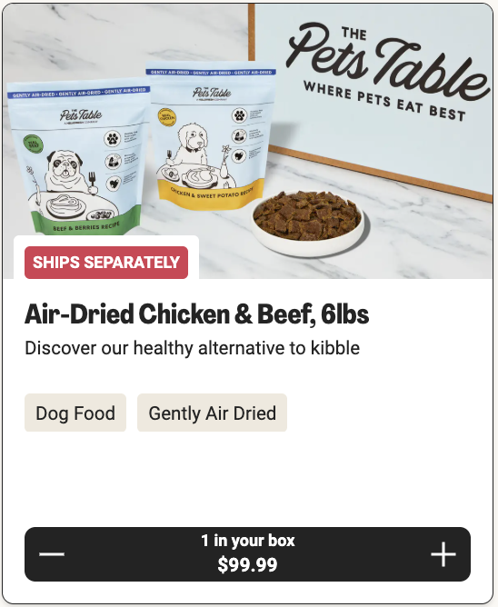 |
| Cart not updated ✗ | Cart not updated ✗ | Cart updated ✓ | Cart not updated ✗ |
Users were building increasingly personalized orders, but the cart wasn't adequately reflecting these changes. Customers experienced confusion about what was actually in their box, why items appeared, and what they would pay.
Beyond user frustrations, the cart was a critical business touchpoint—reviewing their order affected customer pause and cancel decisions. With centralization of the mealkit and ready-to-eat codebases on the roadmap, a scalable, modular cart design was needed to clearly communicate complex orders and ensure seamless purchase decisions.
My role
A new cross-discipline team was formed in Q1 2022 to own the frontend cart experience. Due to my previous work on price clarity, I was asked to join as the lead product designer. After completing delivery of the Autosave initiative in Q1 2024, I commenced work on Cart Redesign in Q2 2024.
I led usability testing, collaborated with a UX research partner on user interviews, and compiled UX principles to inform the design vision and iterations. I worked with a product owner and engineers to deliver design iterations incrementally for maximum impact. Design delivery included a design system composite for all meal kit brands, collaboration with a UX writer, and documentation of meal selection price logic, display rules, and handover guidelines. Support for engineering delivery included copy localization and UA testing.
What users told us
The cart wasn't just a step toward checkout—it was a moment of truth where users either felt confident in their decision or started questioning their subscription value.
I don't know what I'm paying
Price comprehension was breaking the user journey. Unclear pricing was the top UXR pain point, app-wide, in 2023. During usability testing, only 38% of users could correctly calculate the cost of a surcharge meal — some using a calculator to complete the task.
I don't know what's in my cart
In interviews and usability testing, users struggled to distinguish which meals were included in their subscription versus which had surcharges. They didn't understand why items appeared in their cart and found the mixing of included and premium meals confusing and untrustworthy.
I don't know how much I'm saving
In interviews, users wanted to see their savings but had low visibility of benefits applied. Rewards and vouchers were confusing, and the subscription value wasn't reinforced at checkout.
I want control over my delivery
A previous experiment showed customers who used reschedule options were 18% less likely to cancel and ordered 98% more boxes. Users wanted delivery flexibility without leaving the cart flow.
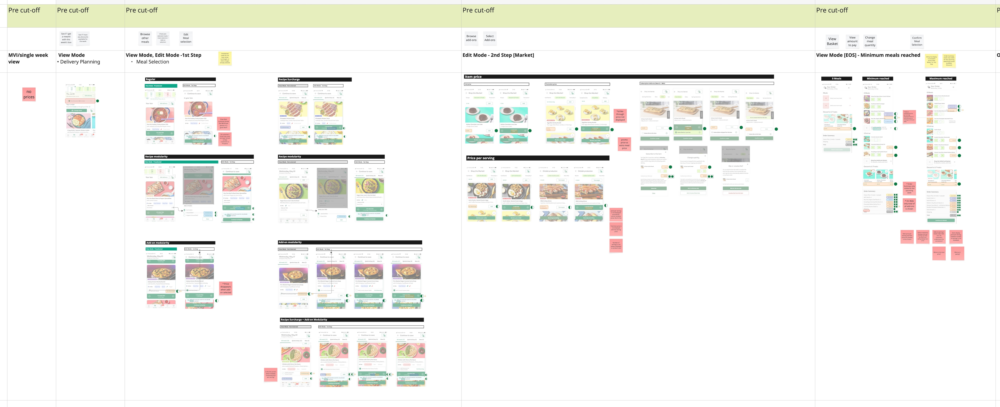
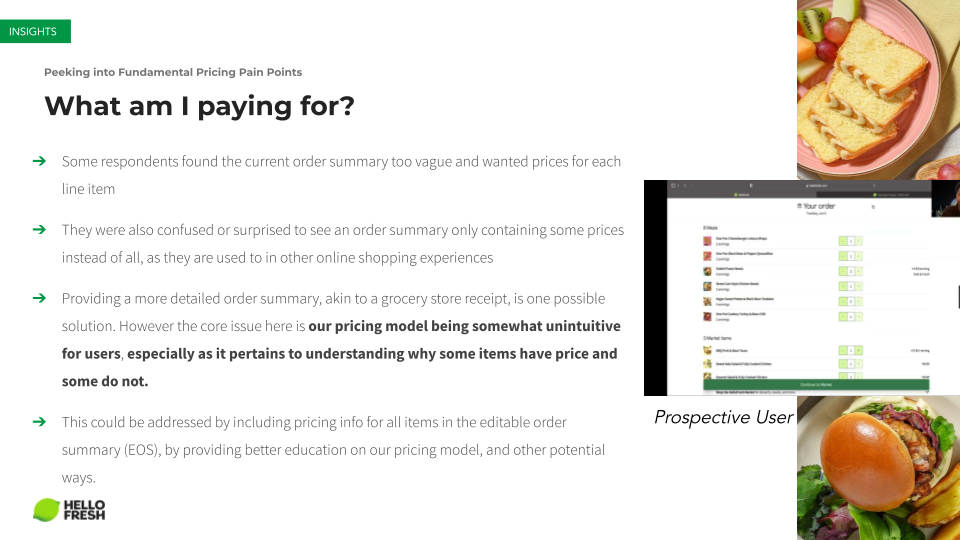
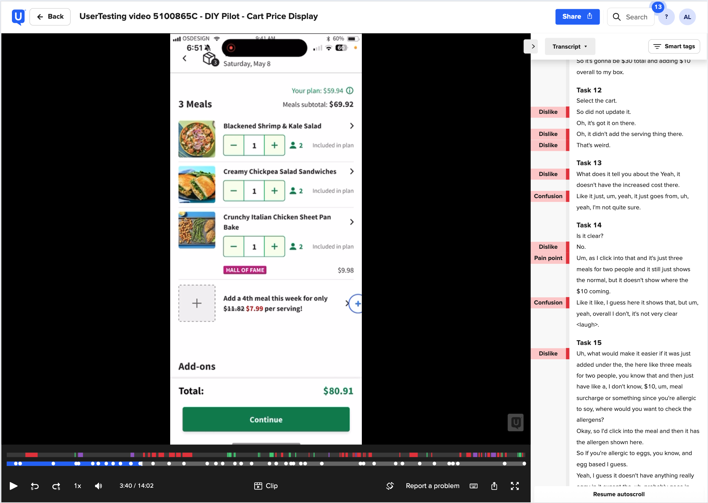
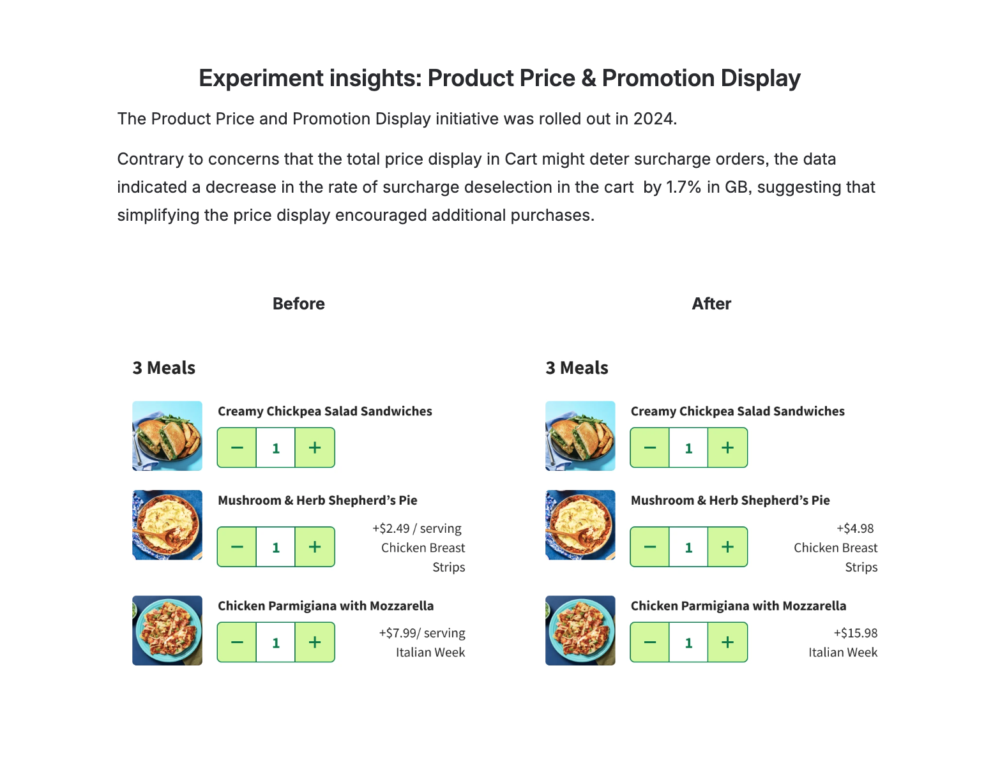
Design Principles
Based on this research, I defined three principles to guide the redesign. The Cart Redesign vision was presented in a company knowledge sharing session at the end of Q1 2024.
Assurance of selections
Users should feel secure about what they'll receive in their box. More trust = higher engagement.
Modification of selections
Users should be able to view and modify all selections during revision in cart, avoiding backwards navigation in the checkout flow.
Price clarity of selections
Costs, discounts, and benefits should be simple to understand. We should not ship system complexity to customers.
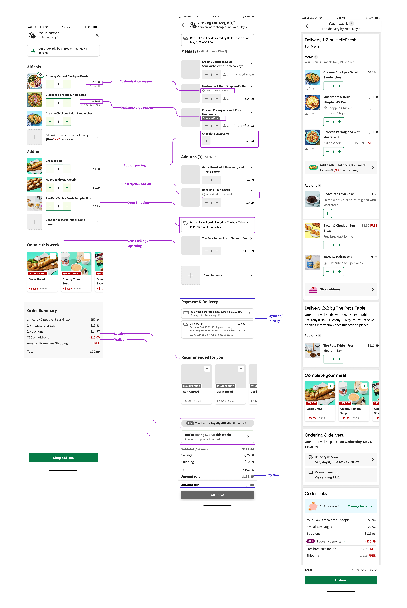
Design Decisions
How the information hierarchy was determined
The hierarchy followed the two core jobs of any e-commerce cart: review your order, then confirm and pay. But as a subscription service with six editable weeks, the cart needed to consolidate everything into one screen for quick review. Secondary functions—price breakdowns, last-minute edits, and upselling—had to fit around those primary tasks without competing for attention.
Iterations between vision and final
The gap between web and app experiments meant the design evolved as other teams introduced new features. Accessibility requirements drove changes like revising the number stepper component. The UI2 rebrand also required a full color revision across the cart.
Why this treatment for add-on pairing labels?
Placement was tricky—paired add-ons are selected alongside meals, so they could logically appear as child items. But since price clarity was a top pain point, I collaborated with UX writing to keep paired add-ons in their own section. This way, users always knew which items were included in their subscription and which cost extra.
Web release
The existing cart used a single-column layout that pushed order totals below the fold for larger baskets, fragmenting the review experience. With a long-term company strategy to increase basket size—expanding add-on offerings and introducing ready-to-eat options—alternatives like a side drawer wouldn't scale. A two-column desktop layout accommodated a larger, more complex cart while keeping order totals visible, and a full-width cross-selling carousel opened up catalogue discovery.
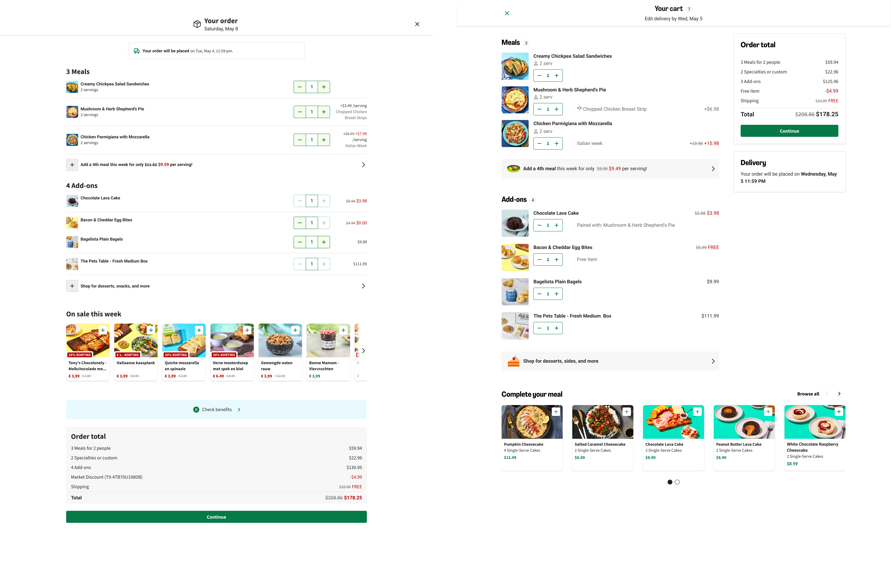
The primary goal was to validate the new layout without negatively impacting revenue—which the results confirmed. We also included the add-on pairing attribute, as this had the most impact on clarifying why items appeared in the cart. However, we observed a 1% drop in extra meal uptake, traced to a change in style of the upselling banner.
After iterating on the banner design, the redesign rolled out across all web markets in December 2024. The first web release focused on high-confidence, low-risk changes: clickable product details (standard e-commerce behavior), the two-column layout, and add-on pairing labels—all shipped in Q4 2024 after experiments confirmed no negative revenue impact.
Upselling banner iteration
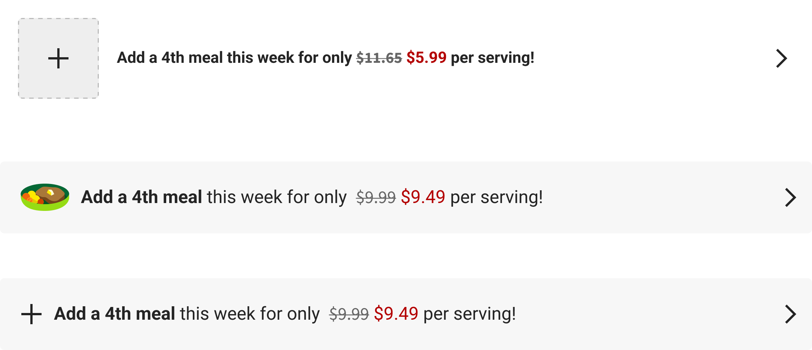
The design system had just introduced brand tokens, allowing one design to serve multiple brands simultaneously. The cart was one of the first features to leverage this—after validating on HelloFresh, Cart Redesign was rolled out to Chefs Plate, Green Chef, and EveryPlate on web in Q4 2024.
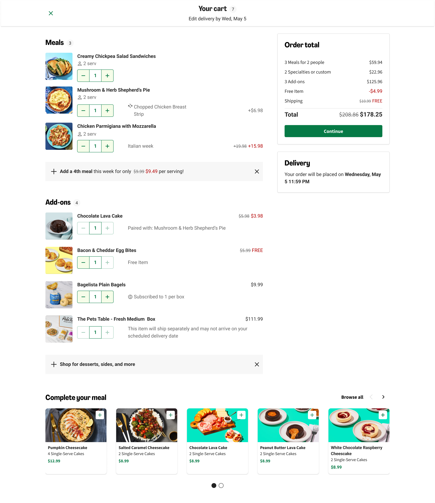
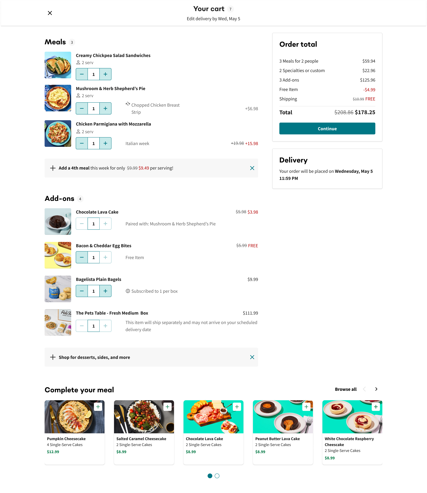
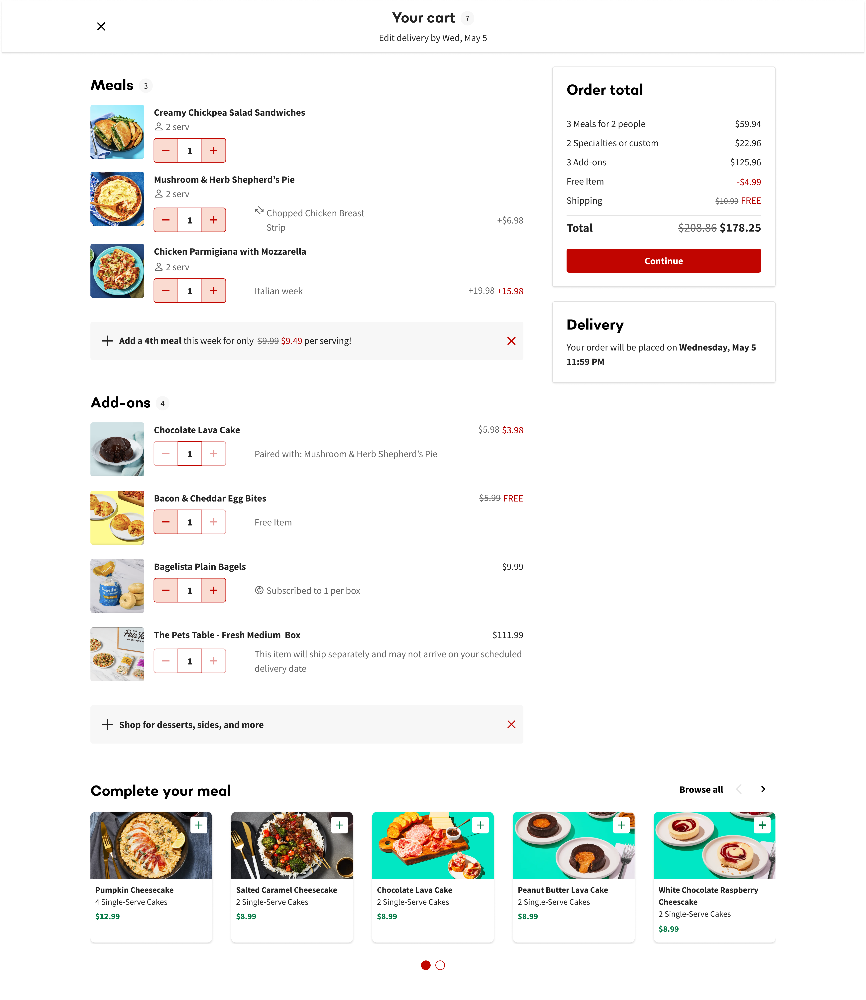
App release and rebrand
The app experiment launched in Q3 2024, bundling delivery rescheduling, savings display, and Free Item for Life labels for validation. Financial metrics were directionally positive but not statistically significant (+0.23% net revenue, +0.26% order value, -0.39% pause rate). Engagement was strong: 11.6% of users clicked the Edit Delivery Drawer, and savings accordion expansion increased by 3.6%. With no negative impact on any metric, these features rolled out across app and web in Q2 2025.
The app experiment also coincided with UI2—HelloFresh's rebrand introducing minimalist typography and a refined color palette. We ran a 2x2 experiment to isolate cart changes from the visual refresh, and UI2 rolled out on HelloFresh alongside the cart features.
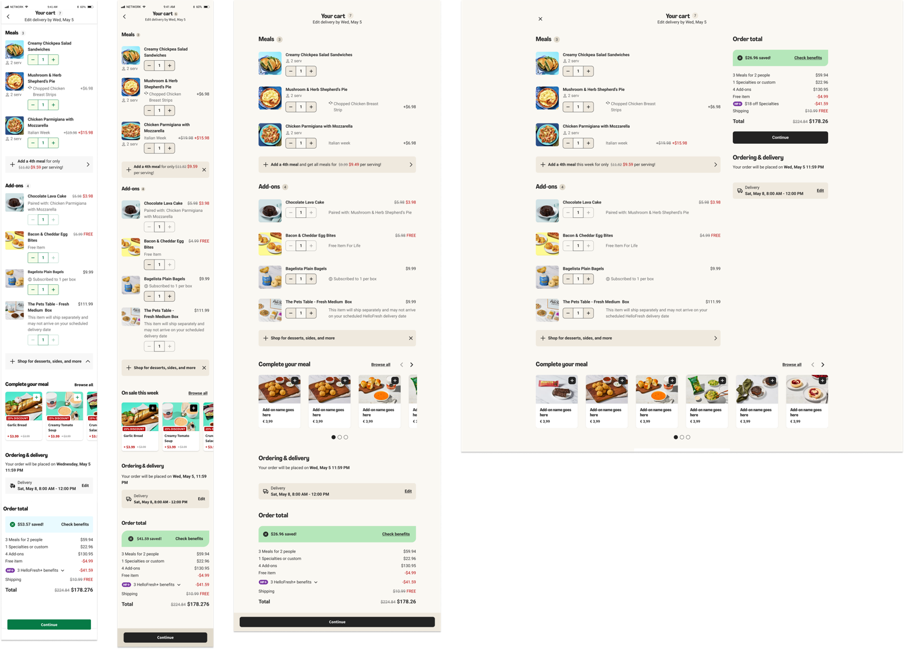
What didn't make the final cut
Price clarity changes—displaying price per meal and total price in the cart footer—were deprioritized due to backend dependencies and a deliberate decision to separate high-risk pricing changes from selection assurance improvements. Similarly, restructuring the cart layout for multiple sellers was deprioritized; instead, a "Ships separately" label was added to the existing layout to provide clarity without the backend lift.
We intentionally descoped payment method display. Prior experiments showed that surfacing payment info increased cancellation rates—transparency likely prompted low-intent users to pause or remove payment methods.
Forks in the road
Guarding the checkout experience
As the final step before order confirmation, the cart carries a heavy load: meal selections, upselling, sign-up discounts, and loyalty program (HelloFresh+) information. Requests from other teams to surface new features in the cart come up constantly. Each requires careful negotiation—balancing visibility for the feature against the cart's core job: review and confirm.
Backend dependencies
The cart relies on data from multiple backend teams, each with their own roadmaps. Coordinating releases—and managing conflicting priorities—is an ongoing challenge. Features like minimum order requirements, autosave behavior, and upselling logic all need to work consistently across the editable cart, which means alignment across teams before any change ships.
What Worked
Research-driven confidence
Clear problem definition from discovery gave me confidence to advocate for features like in-cart delivery editing and make efficient design decisions throughout.
Strategic scoping and collaboration
Separating high-confidence changes from those needing validation let us ship value quickly. Close work with the design system team ensured the cart was modular across brands and resilient to the UI2 rebrand.
What I'd Do Differently
Push harder on price clarity
Price comprehension was the top UXR pain point, yet we deprioritized most price clarity changes due to backend dependencies. In hindsight, the research evidence was strong enough to justify the coordination cost—I'd advocate more aggressively to sequence these changes into the roadmap.
Earn the upselling placement
The cross-sell section in the cart was out of scope since personalization data wasn't available at the time. Generic recommendations take up valuable real estate without delivering proportional value. I'd push to either make recommendations relevant to the customer—or reconsider whether the section earns its placement at all.